import numpy as np
import matplotlib.pyplot as plt
import pandas as pd
%matplotlib inline
%config InlineBackend.figure_format = 'retina'Image Segmentation using K-Means Clustering
Image Segmentation using K-Means Clustering
!wget https://segment-anything.com/assets/gallery/AdobeStock_94274587_welsh_corgi_pembroke_CD.jpg -O dog.jpg--2023-04-15 11:58:51-- https://segment-anything.com/assets/gallery/AdobeStock_94274587_welsh_corgi_pembroke_CD.jpg
Resolving segment-anything.com (segment-anything.com)... 108.158.245.28, 108.158.245.33, 108.158.245.84, ...
Connecting to segment-anything.com (segment-anything.com)|108.158.245.28|:443... connected.
HTTP request sent, awaiting response... 200 OK
Length: 221810 (217K) [image/jpeg]
Saving to: ‘dog.jpg’
dog.jpg 100%[===================>] 216.61K 348KB/s in 0.6s
2023-04-15 11:58:53 (348 KB/s) - ‘dog.jpg’ saved [221810/221810]
# Read image and convert to RGB
img = plt.imread('dog.jpg')
# Convert to [0, 1] range
img = img / 255
# Plot image
plt.imshow(img)<matplotlib.image.AxesImage at 0x7f9f93236fd0>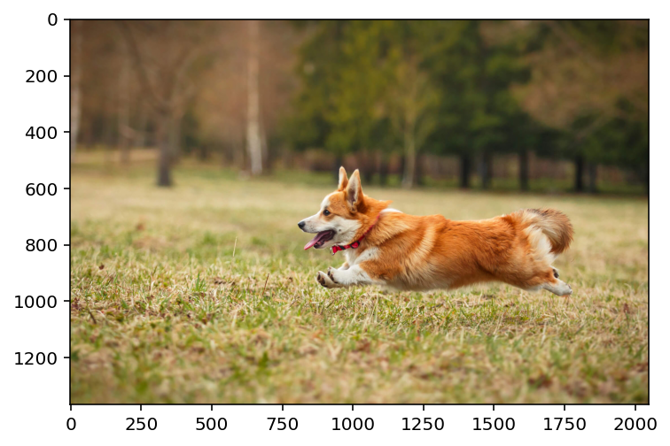
img.shape(1365, 2048, 3)from sklearn.cluster import KMeans
# Reshape image to 2D array
img_2d = img.reshape(-1, 3)
pd.DataFrame(img_2d).describe()| 0 | 1 | 2 | |
|---|---|---|---|
| count | 2.795520e+06 | 2.795520e+06 | 2.795520e+06 |
| mean | 5.542249e-01 | 4.757675e-01 | 2.935504e-01 |
| std | 2.068960e-01 | 1.844162e-01 | 1.533922e-01 |
| min | 3.921569e-02 | 0.000000e+00 | 0.000000e+00 |
| 25% | 3.882353e-01 | 3.176471e-01 | 1.647059e-01 |
| 50% | 5.725490e-01 | 4.705882e-01 | 2.666667e-01 |
| 75% | 7.294118e-01 | 6.392157e-01 | 4.078431e-01 |
| max | 1.000000e+00 | 1.000000e+00 | 1.000000e+00 |
# Fit KMeans from scikit-learn (slow!)
kmeans = KMeans(n_clusters=5, random_state=0).fit(img_2d)kmeans.cluster_centers_, kmeans.labels_(array([[0.59260829, 0.48656705, 0.2670584 ],
[0.24250138, 0.22963615, 0.12538282],
[0.8270407 , 0.74152134, 0.54547183],
[0.71622954, 0.62308534, 0.39023071],
[0.419752 , 0.3354403 , 0.18325719]]),
array([1, 1, 1, ..., 4, 4, 4], dtype=int32))# instead use FAISS with GPU
import faiss
# Set up FAISS index
d = img_2d.shape[1] # Dimension of the feature vectors
n_clusters = 5 # Number of clusters
n_gpus = 2 # Number of GPUs to use
# Initialize a multi-GPU IndexFlatL2 index
index_flat = faiss.IndexFlatL2(d)
index = faiss.index_cpu_to_all_gpus(index_flat, ngpu=n_gpus)kmeans_gpu = faiss.Clustering(d, n_clusters)
kmeans_gpu.verbose = True
kmeans_gpu.niter = 20
kmeans_gpu.train(img_2d.astype(np.float32), index)Sampling a subset of 1280 / 2795520 for training
Clustering 1280 points in 3D to 5 clusters, redo 1 times, 20 iterations
Preprocessing in 0.03 s
Iteration 19 (0.44 s, search 0.00 s): objective=12.4307 imbalance=1.031 nsplit=0 _, I = index.search(img_2d.astype(np.float32), 1) # Search for nearest centroid
cluster_ids = I.squeeze()# Create segmented image using cluster centers frmo sklearn
segmented_img = kmeans.cluster_centers_[kmeans.labels_]
segmented_img = segmented_img.reshape(img.shape)
centroids_gpu = faiss.vector_float_to_array(kmeans_gpu.centroids).reshape(n_clusters, d)
# Create segmented image using cluster centers from FAISS
segmented_img_faiss = centroids_gpu[cluster_ids]
# Plot segmented image side by side
fig, ax = plt.subplots(1, 2, figsize=(10, 5))
ax[0].imshow(segmented_img)
ax[1].imshow(segmented_img_faiss.reshape(img.shape))<matplotlib.image.AxesImage at 0x7f9d5c6fe160>
# Now, let's try to segment the image using a different number of clusters using FAISS
def segment_plot(img, k=5):
# Reshape image to 2D array
img_2d = img.reshape(-1, 3)
# Set up FAISS index
d = img_2d.shape[1] # Dimension of the feature vectors
n_clusters = k # Number of clusters
n_gpus = 2 # Number of GPUs to use
# Initialize a multi-GPU IndexFlatL2 index
index_flat = faiss.IndexFlatL2(d)
index = faiss.index_cpu_to_all_gpus(index_flat, ngpu=n_gpus)
kmeans_gpu = faiss.Clustering(d, n_clusters)
kmeans_gpu.verbose = True
kmeans_gpu.niter = 20
kmeans_gpu.train(img_2d.astype(np.float32), index)
_, I = index.search(img_2d.astype(np.float32), 1) # Search for nearest centroid
cluster_ids = I.squeeze()
centroids_gpu = faiss.vector_float_to_array(kmeans_gpu.centroids).reshape(n_clusters, d)
# Create segmented image using cluster centers from FAISS
segmented_img_faiss = centroids_gpu[cluster_ids]
# Plot segmented image side by side
fig, ax = plt.subplots(1, 2, figsize=(10, 5))
ax[0].imshow(img)
ax[1].imshow(segmented_img_faiss.reshape(img.shape))
# Plot the color of each cluster
fig, ax = plt.subplots(1, 1, figsize=(4, 4))
ax.imshow(centroids_gpu.reshape(1, n_clusters, 3))
segment_plot(img, k=2)Sampling a subset of 512 / 2795520 for training
Clustering 512 points in 3D to 2 clusters, redo 1 times, 20 iterations
Preprocessing in 0.03 s
Iteration 19 (0.14 s, search 0.00 s): objective=14.8063 imbalance=1.000 nsplit=0 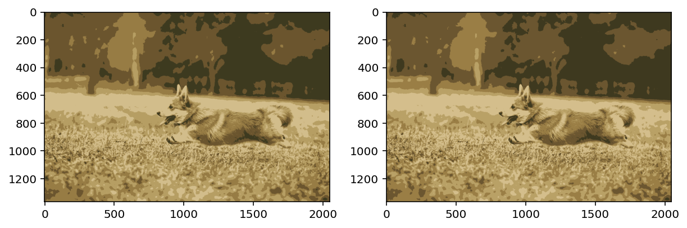
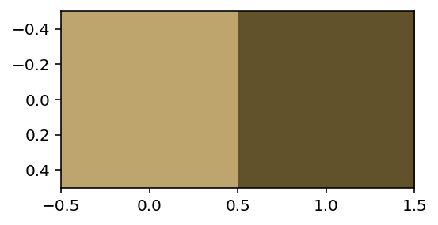
segment_plot(img, k=10)Sampling a subset of 2560 / 2795520 for training
Clustering 2560 points in 3D to 10 clusters, redo 1 times, 20 iterations
Preprocessing in 0.03 s
Iteration 19 (0.03 s, search 0.01 s): objective=13.6225 imbalance=1.202 nsplit=0 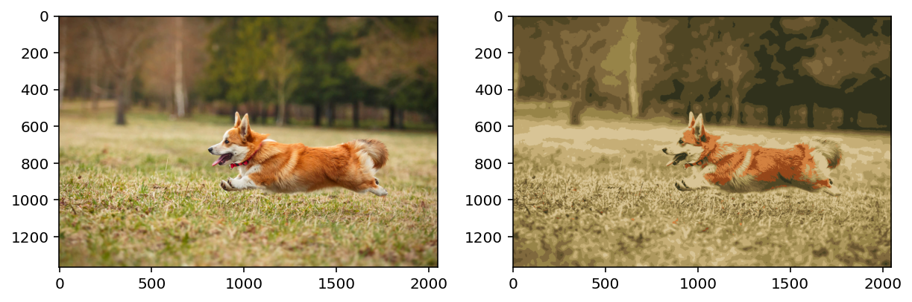
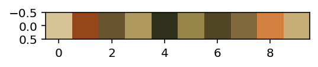
# Modify segmentation function to mask out all but the given cluster
from copy import deepcopy
def segment_plot_mask(img, k=5):
# Reshape image to 2D array
img_2d = img.reshape(-1, 3)
# Set up FAISS index
d = img_2d.shape[1] # Dimension of the feature vectors
n_clusters = k # Number of clusters
n_gpus = 2 # Number of GPUs to use
# Initialize a multi-GPU IndexFlatL2 index
index_flat = faiss.IndexFlatL2(d)
index = faiss.index_cpu_to_all_gpus(index_flat, ngpu=n_gpus)
kmeans_gpu = faiss.Clustering(d, n_clusters)
kmeans_gpu.verbose = True
kmeans_gpu.niter = 20
kmeans_gpu.train(img_2d.astype(np.float32), index)
_, I = index.search(img_2d.astype(np.float32), 1) # Search for nearest centroid
cluster_ids = I.squeeze()
centroids_gpu = faiss.vector_float_to_array(kmeans_gpu.centroids).reshape(n_clusters, d)
# Create segmented image using cluster centers from FAISS
segmented_img_faiss = centroids_gpu[cluster_ids]
# Plot segmented image side by side
fig, ax = plt.subplots(1, 2, figsize=(10, 5))
ax[0].imshow(img)
segmented_img_faiss = segmented_img_faiss.reshape(img.shape)
ax[1].imshow(segmented_img_faiss)
# Now, create another figure with number of cluser columns
# and plot each cluster with mask applied to the original image
# The mask is an alpha channel
fig, ax = plt.subplots(1, n_clusters, figsize=(n_clusters*4, 5))
for i in range(n_clusters):
img_masked = deepcopy(img_2d)
img_masked[cluster_ids != i] = 1.0
ax[i].imshow(img_masked.reshape(img.shape))
ax[i].set_title(f'Cluster {i}')
ax[i].axis('off')
img.shape(1365, 2048, 3)mask = segment_plot_mask(img, k=2)Sampling a subset of 512 / 2795520 for training
Clustering 512 points in 3D to 2 clusters, redo 1 times, 20 iterations
Preprocessing in 0.02 s
Iteration 19 (0.46 s, search 0.00 s): objective=14.8063 imbalance=1.000 nsplit=0 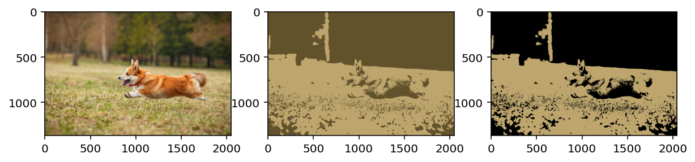
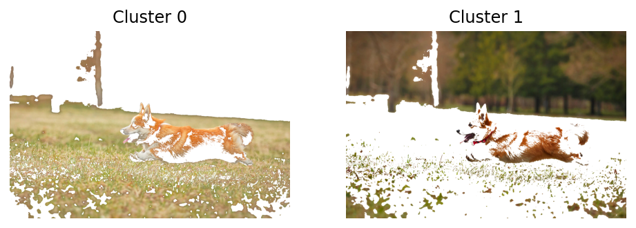
mask = segment_plot_mask(img, k=3)Sampling a subset of 768 / 2795520 for training
Clustering 768 points in 3D to 3 clusters, redo 1 times, 20 iterations
Preprocessing in 0.02 s
Iteration 19 (0.46 s, search 0.00 s): objective=12.5181 imbalance=1.009 nsplit=0 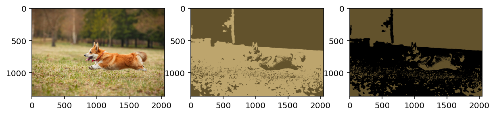
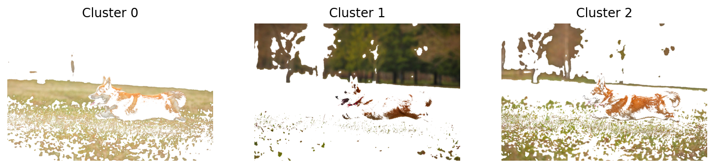
mask = segment_plot_mask(img, k=4)Sampling a subset of 1024 / 2795520 for training
Clustering 1024 points in 3D to 4 clusters, redo 1 times, 20 iterations
Preprocessing in 0.02 s
Iteration 19 (0.15 s, search 0.00 s): objective=12.6442 imbalance=1.031 nsplit=0 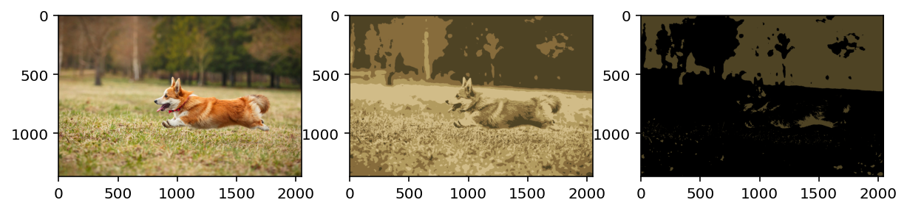
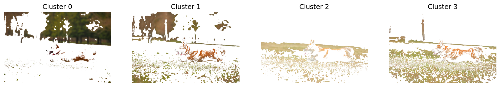
# Now, let us segment the image using not only RGB but also the spatial coordinates
# Reshape image to 2D array
img_2d = img.reshape(-1, 3)
# Add spatial coordinates
x = np.arange(img.shape[0])
y = np.arange(img.shape[1])
# Scale the spatial coordinates to be between a and b
def scale(x, a, b):
return (b-a)*(x-x.min())/(x.max()-x.min()) + a
x = scale(x, 0.25, 0.75)
y = scale(y, 0.25, 0.75)
xx, yy = np.meshgrid(x, y)
xx = xx.reshape(-1, 1)
yy = yy.reshape(-1, 1)
img_2d_spatial = np.hstack((img_2d, xx, yy))
pd.DataFrame(img_2d_spatial).describe()| 0 | 1 | 2 | 3 | 4 | |
|---|---|---|---|---|---|
| count | 2.795520e+06 | 2.795520e+06 | 2.795520e+06 | 2.795520e+06 | 2.795520e+06 |
| mean | 5.542249e-01 | 4.757675e-01 | 2.935504e-01 | 5.000000e-01 | 5.000000e-01 |
| std | 2.068960e-01 | 1.844162e-01 | 1.533922e-01 | 1.444434e-01 | 1.444081e-01 |
| min | 3.921569e-02 | 0.000000e+00 | 0.000000e+00 | 2.500000e-01 | 2.500000e-01 |
| 25% | 3.882353e-01 | 3.176471e-01 | 1.647059e-01 | 3.750000e-01 | 3.750000e-01 |
| 50% | 5.725490e-01 | 4.705882e-01 | 2.666667e-01 | 5.000000e-01 | 5.000000e-01 |
| 75% | 7.294118e-01 | 6.392157e-01 | 4.078431e-01 | 6.250000e-01 | 6.250000e-01 |
| max | 1.000000e+00 | 1.000000e+00 | 1.000000e+00 | 7.500000e-01 | 7.500000e-01 |
# Now, modify the segment_plot function to include spatial coordinates
def segment_plot_spatial(img, k=5):
# Reshape image to 2D array
img_2d = img.reshape(-1, 3)
# Add spatial coordinates
x = np.arange(img.shape[0])
y = np.arange(img.shape[1])
# Scale the spatial coordinates to be between a and b
x = scale(x, 0, 1)
y = scale(y, 0, 1)
xx, yy = np.meshgrid(x, y)
xx = xx.reshape(-1, 1)
yy = yy.reshape(-1, 1)
img_2d_spatial = np.hstack((img_2d, xx, yy))
# Set up FAISS index
d = img_2d_spatial.shape[1] # Dimension of the feature vectors
n_clusters = k # Number of clusters
n_gpus = 2 # Number of GPUs to use
# Initialize a multi-GPU IndexFlatL2 index
index_flat = faiss.IndexFlatL2(d)
index = faiss.index_cpu_to_all_gpus(index_flat, ngpu=n_gpus)
kmeans_gpu = faiss.Clustering(d, n_clusters)
kmeans_gpu.verbose = True
kmeans_gpu.niter = 20
kmeans_gpu.train(img_2d_spatial.astype(np.float32), index)
_, I = index.search(img_2d_spatial.astype(np.float32), 1) # Search for nearest centroid
cluster_ids = I.squeeze()
centroids_gpu = faiss.vector_float_to_array(kmeans_gpu.centroids).reshape(n_clusters, d)
# Create segmented image using cluster centers from FAISS with spatial coordinates excluded for plotting
segmented_img_faiss = centroids_gpu[cluster_ids, :3]
# Plot segmented image side by side
fig, ax = plt.subplots(1, 2, figsize=(10, 5))
ax[0].imshow(img)
ax[1].imshow(segmented_img_faiss.reshape(img.shape))
# Now, create another figure with number of cluser columns
# and plot each cluster with mask applied to the original image
# The mask is an alpha channel
fig, ax = plt.subplots(1, n_clusters, figsize=(n_clusters*4, 5))
for i in range(n_clusters):
img_masked = deepcopy(img_2d_spatial[:, :3 ])
img_masked[cluster_ids != i] = 1.0
ax[i].imshow(img_masked.reshape(img.shape))
ax[i].set_title(f'Cluster {i}')
ax[i].axis('off')segment_plot_spatial(img, k=2)Sampling a subset of 512 / 2795520 for training
Clustering 512 points in 5D to 2 clusters, redo 1 times, 20 iterations
Preprocessing in 0.03 s
Iteration 19 (0.44 s, search 0.00 s): objective=73.9492 imbalance=1.018 nsplit=0 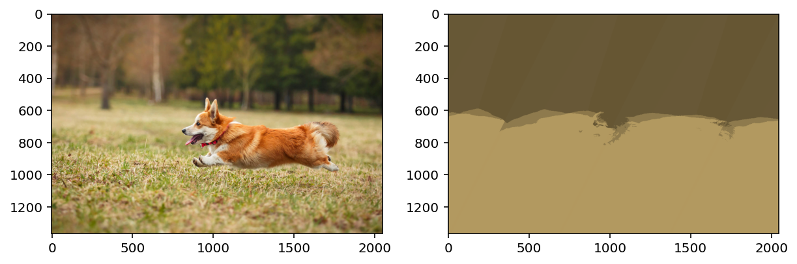
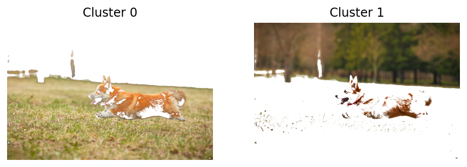
segment_plot_mask(img, k=2)Sampling a subset of 512 / 2795520 for training
Clustering 512 points in 3D to 2 clusters, redo 1 times, 20 iterations
Preprocessing in 0.02 s
Iteration 19 (0.03 s, search 0.00 s): objective=14.8063 imbalance=1.000 nsplit=0 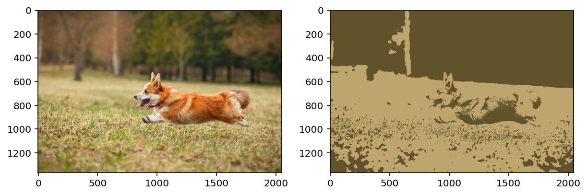